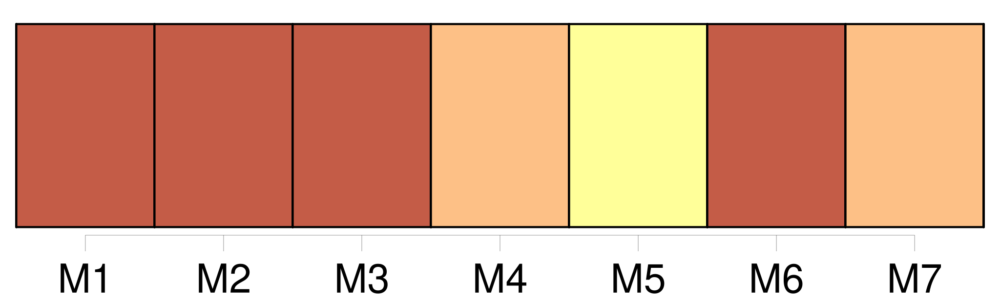
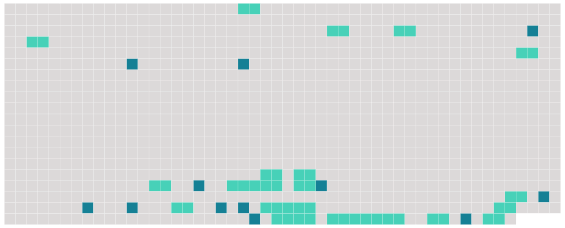

Longueur nb maillons : 30 mentions |
 |
Et voici la quatrième : [7 phrases]
« Étant depuis trois jours en [mon lit] , c'est à [mon lit] que je pense, et même dans le sommeil j' [y] médite encore. « [Le lit] , mon ami, c'est toute notre vie. [4 phrases] « Vous connaissez [mon lit] , mon ami. Vous ne vous figurerez jamais que de choses j' [y] ai découvertes depuis trois jours, et comme je [l'] aime davantage. [16 phrases]
Et quand au lit nous serons Entrelacés, nous ferons Les lascifs, selon les guises Des amants qui librement Pratiquent folâtrement Sous les draps cent mignardises « Et songez à la mort, mon ami, à tous ceux qui ont exhalé vers Dieu leur dernier souffle en [ce lit] Car [il] est aussi [le tombeau des espérances finies] , [la porte] [qui] ferme tout après avoir été celle qui ouvre le monde.
Que de cris, que d'angoisses, de souffrances, de désespoirs épouvantables, de gémissements d'agonie, de bras tendus vers les choses passées, d'appels aux bonheurs terminés à jamais ; que de convulsions, de râles, de grimaces, de bouches tordues, d'yeux retournés, dans [ce lit] , [où] je vous écris, depuis trois siècles qu' [il] prête aux hommes [son] abri! « [Le lit] , songez [-y] , [c'] est [le symbole de la vie] ; je me suis aperçue de cela depuis trois jours.
Rien n'est excellent hors [du lit] [2 phrases]
[Il] est [le refuge des malades] , [un lieu de douleurs aux corps épuisés] « [Le lit] , [c'] est [l'homme] |
 |
Il est possible de télécharger la ressource sur la page Ortolang |
Si vous avez des questions ou vous voyez des erreurs, merci d'envoyer un mail à silvia.federzoni89@gmail.com |